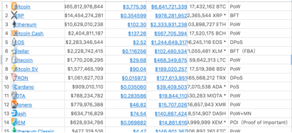
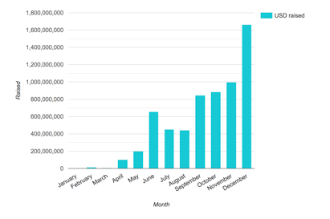
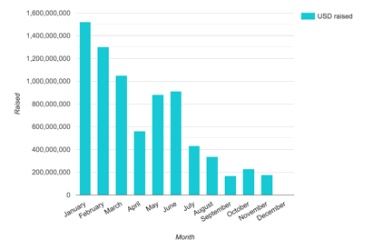

序言
本书主要面向的读者主要是区块链参与人员和爱好者，包括程序员，运营和产品人员，爱好者等都可以轻松的理解本书。
PoS共识算法，是在PoW的基础上发展出来的。本书大量的说明，对比和实例都是基于PoW共识算法的对比来展开讲述的。如果读者在阅读本书时候碰到疑问，诸如PoW共识为什么消耗能源，PoW共识中如何选举出块人等，那不妨先回头认识一下比特币的PoW共识算法，在初步认识之后，再读此书会加深自己对PoS的认识。
在此推荐认识比特币的一本书《Mastering Bitcoin》，作者Andreas M. Antonopoulos。
由于PoS算法的发展历程并不长（6年+），很多新项目的PoS共识还停留在博客，白皮书或者是初级工程阶段，有些项目可能连代码都没有，亦或者是这些代码还在不断的被修改，测试网经常崩溃，这些情况还不能作为评价该项目PoS共识的最终结论。
本书中的例子涉及的范围比较广，所以我在本书对例子的描述可能会和真实主网情况有所偏差。区块链世界会一直发展，我也会一直继续关注PoS共识的发展，并不断的更正，更新这本书中的描述。
目前本书中，大部分内容并未进行代码层面的确认（或者无法进行确认），如果读者碰到书中所述有不正确的地方，可以发邮件到kamiesheep@gmail.com，我们一起讨论。
另外，本书中也不会以代码的形式讲述例子，我不是标准的程序员，所以我会以自己擅长的方式给大家讲述我对PoS共识的整体理解。
PoS算法的工程化从2012的Peercoin年开始，2019年会是一个大的里程碑。这一年，多数应用PoS共识算法的主链，都会在2019年上线主网。写这本书的时候是2018年下旬，希望以此记录PoS在新纪元的发展历程。
关于作者
本人，名称卡咩，这是一个小时候的外号，长大后因为注册各种网站多不重名，所以沿用到现在。我个人比较喜欢折腾，特别热衷于科技类型的新兴事物，如AI，VR，AR，区块链等，总想在其中找到新的机会。
工程师出身，后转行做了产品，先后做过零售创业，O2O电商，现在从事PoS共识中Staking方向的创业，产品之一就是Wetez Staking Pool，其中对应的工具叫Wetez Wallet。本书中不会涉及Wetez的介绍，是一个以认识区块链共识视角的角度写的，算是我个人在研究整个PoS过程中的总结。
术语表
区块链
字面意思理解区块链，区块链是指由一个一个包含数据的区块按照顺序连在一起的一条链。深入理解的话，区块链是借由密码学串接并保护内容的串连交易记录（又称区块）。
每一个区块包含了前一个区块的加密散列、相应时间戳记以及交易数据（通常用默克尔树算法计算的散列值表示），这样的设计使得区块内容具有难以篡改的特性。用区块链所串接的分布式账本能让两方有效纪录交易，且可永久查验此交易。
附录二中引用了Andreas M. Antonopoulos和Gavin Wood共同编写的《Matering Ethereum》书中的介绍来说明区块链（原话由Luckywrt翻译）
区块链共识
通过密码学让分布式网络达成一致的一种算范，如PoW，PoS
PoW
Proof of Work，工作量证明机制
PoS
Proof of Stake，股权证明机制
Stake
可以翻译为质押，PoS共识中，通过Stake可以获得出块人权利，将Token进行Stake，意思就将Token抵押给系统的意思。
硬分叉与软分叉
软件的更新不向后做兼容。比如2013版本的word文件在2018版本的word里面是可以打开的，这种更新是做了向后兼容的，可以理解为是软分叉；如果不能打开，可以理解这个更新是一次硬分叉。
最终确定性
指区块信息无法被篡改，或者篡改可能性非常小
Dapp
去中心化应用，Decentralized Applications
TPS
每秒交易笔数（Transactions per second）
Nothing at Stake
无利害关系，指在PoS共识下，验证人作恶无风险的行为情况
Slash
削减/扣除，指PoS共识下，系统扣除验证人抵押金的行为
SEC
美国证券交易委员会
矿工/验证人/出块人
矿工：我们通常把PoW共识中的节点维护人，叫矿工；验证人：我们通常把PoS共识中的节点维护人，叫验证人，有些项目也叫出块人（Block Producer）
ICO
Initial Coin Offering 首次币发行
Voting Power
直译为投票权重，实际指的是通过Stake的代币占总量的比重。比如代币总量为1亿，1千万代币进行了Stake，那么整体的投票权重为10%，这10%可能分布在不同节点身上，和节点数量没有关系，很可能是5%分布在一个节点，其余5%分布在生态中其他100个节点中。
Nonce
在通信安全中，Nonce是一个在加密通信只能使用一次的数字
1. 第一章 PoS介绍
1.1. 什么是区块链共识
区块链是由一个一个块链接形成了块链条，每个新块生成（包含交易记录）都需要参与验证人的共同确认，这个共同确认的过程就是区块链共识。区块链从2009年发展到现在，已经演变出多种共识，不同共识以不同方法解决了运行中出现的攻击，作弊，延时，一致性，最终确定性等等问题。
截至2018年，主流的共识算法包括PoW（Proof of Work工作量证明），PoS（Proof of Stake 股权证明机制），BFT （拜占庭容错机制），混合共识等，还有一些从主流基础上演变出来的共识算法，诸如PoA（Proof of Authorization授权证明机制），PoI（Proof of Importance重要性证明机制），DPoS （Delegate Proof of Stake股权证明机制），PBFT（Practical Byzantine Fault Tolerance使用拜占庭容错算法）等等，百家争鸣，百花齐放。
其中，主流算法里面，PoS应该是当前主流里面的主角。PoS在PoW的基础上发展而来，更受到当今区块链共识世界里面的推崇。在2014-2017年期间，基于PoS共识打造的区块链逐渐增多，就连市值长期保持第二的以太坊也计划从PoW转到PoS。2019年，这些基于PoS的公有链会上线主网，届时我们将看到新一代PoS公链站到舞台中央，让人们审视。
此章节，我们会对PoS共识算法的起源和发展，做一个简要的总览。
1.1. 什么是PoS-股权证明机制共识
PoS（Proof of Stake）——股权证明机制，一种主流的区块链共识算法，目的是为了让区块链里的分布式节点达成共识，它往往和PoW（Proof of Work）——工作量证明机制一起出现，两种都被认为是区块链共识算法里面的主流算法之一。
PoW于2009年诞生并应用于比特币，PoS于2011年提出，2012年首个应用该算法的币种Peercoin诞生。PoS作为后来者，在共识层面借鉴很多PoW的设计，如区块设计，矿工选择，分叉处理，交易验证等，很多对共识的改进和区块链底层有很大的关系，PoS做了大量的改进设置，以满足基于股权证明的机制，可以说是取其精华去其糟粕。
关于PoS的定义，维基百科对其的定义是：一种旨在使加密货币区块链网络达成分布式共识的算法
Proof of stake (PoS) is a type of algorithm by which a cryptocurrency blockchain network aims to achieve distributed consensus.
记载中，最早在2011年PoS的提出者，对PoS是这样描述的：我在想，如果比特币被更广泛的应用，那么一种基于PoW系统证明的交易，有可能会被基于PoS系统的证明所替代。我的意思是，PoS——股权证明机制，就是以你可以用私钥证明的比特币数量为权重，来代替你给比特币网络带来的算力权重，给交易历史“投票”来证明。
I'm wondering if as bitcoins become more widely distributed, whether a transition from a proof of work based system to a proof of stake one might happen. What I mean by proof of stake is that instead of your "vote" on the accepted transaction history being weighted by the share of computing resources you bring to the network, it's weighted by the number of bitcoins you can prove you own, using your private keys.
以太坊创始人Vitalik Burtain 也是PoS的提倡者，他在《Casper the Friendly Finality Gadget》博客中对PoS的定义是：在一个PoS系统中，区块链的新区块生成是通过该系统中的持币人，或者是一个有影响力的持币机构参与达成的。这比PoW的挖矿具有更高的效率，不需要高性能的硬件，也不需要花费电力。
In a PoS system, a blockchain appends and agrees on new blocks through a process where anyone who holds coins inside of the system can participate, and the influence an agent has is proportional to the number of coins (or ‘stake’) it holds. This is a vastly more efficient alternative to PoW‘mining’ and enables blockchains to operate without mining’s high hardware and electricity costs.
基于以上的定义，我们对PoS应该有了一个大致的了解：它是一种算法，通过持币人的同意来达成共识，目的是确定出新区块，这过程相对于PoW，不需要硬件和电力，且效率更高。
PoS共识中引入了Stake的概念，持币人将代币进行Staking，然后获得出块的机会，PoS共识中会通过选举算法，按照持币量比例，选出区块的矿工。矿工在指定高度完成打包交易，生成新区块，并广播区块，广播的区块经过PoS共识中另外一道“门槛”，验证人验证交易，通过验证后，区块得到确认。这样一轮PoS的共识过程就进行完成了。
分布式网络中有很多个节点，这节点就是上述讲到的Stake，PoS共识所保证的就是，系统足够安全，不会被外人所破坏，并独立稳定的运行下去。这其中需要考虑的问题非常的多，这些问题会我会在后面的章节中和大家讲明白。
1.1. PoS共识的趋势
目前在Top50市值的币种里面（2018-12-20，来源https://coinmarketcap.com/coins/），应用PoS，类PoS和PoS混合共识（包含PoS，但不包含PoW）的种类总共有16种，占总量32%；应用PoW和PoW混合共识（包含PoW，也可以包含PoS）的种类总共有22种，占总量40%，PoW+PoS混合共识的种类总共有3种，占比6%。
前50市值的币种中，很多都是从比特币时代发展起来的，所以我们看到目前占比更多的还是基于PoW共识的币种，但这其中包含了很多功能类似的分叉币种，如对BTC的分叉就多达5种，比特现金Bitcoin cash，比特愿景Bitcoin SV，比特黄金Bitcoin Gold等,还有ETH上的分叉；还有针对以太坊的以太坊Ethereum和以太坊经典Ethereum Classic（并且分叉还有可能持续发生）。如果把重复币种去除，PoS和PoW的占比就会比较接近了。

图1 市值Top50币种的共识分类
2017年是ICO（Initial Coin Offering 首次币发行）元年，也是大量公有链爆发出来的元年。共有876种币种进行ICO，总共募资余额62亿美元。
其中募资额Top20当中，基于PoS共识的币种有6种，占比30%；基于PoW共识的只有1种，占比5%。其中Tezos为2017年PoS募集之最，总募资额约为2.3亿美元。PoW和PoS总量占比都在减少，这和当时大量项目以ETH平台创建有关系。
总体上看，趋势比较明显，在未来10年中，PoW会趋向减少，PoS在趋向增多。

图2 2017年ICO 募资情况 （数据来源于ICODATA）
2018年，由于整体加密数字通证进入熊市，很多ICO项目没有得到很好的融资，加上公有链项目赛道已经比较拥挤，项目方融不到钱，所以自然关注度降低了很多。但是，这其中也有新的PoS项目涌现，如图灵奖得主Sivio Micali的Algorand，就是基于PoS共识的项目。下面图3可以看到2018年的融资情况。

图3 2018年ICO 募资情况 （数据来源于ICODATA）